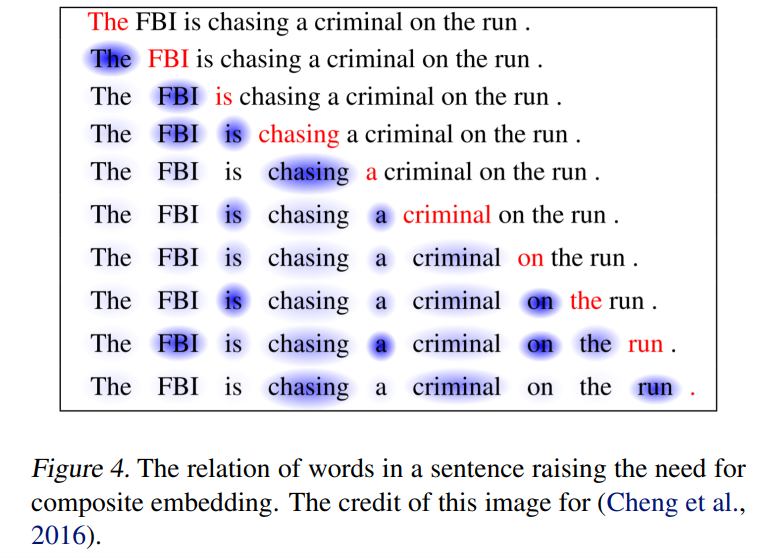
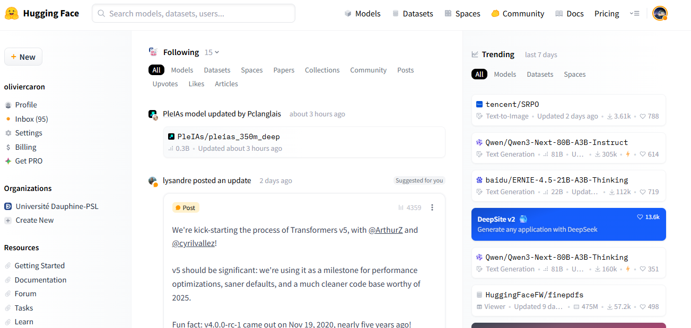

La Révolution du Langage Appliquée au Marketing
Paris Dauphine - PSL
Dans la séance précédente, nous avons vu la puissance des embeddings comme Word2Vec. Cependant, ils ont une limite majeure.
Avec Word2Vec, un mot = un seul vecteur, appris une fois pour toutes. Le mot “avocat” aura donc le même vecteur, qu’on parle du fruit ou de la profession.
"J'aime manger un avocat avec du citron."
"Je vais consulter mon avocat pour ce litige."
Pour ces modèles, le sens est statique.
Pour un humain, le sens d’un mot dépend de la phrase entière qui l’entoure. Word2Vec ne regarde qu’une petite fenêtre de mots voisins, ce qui est insuffisant pour lever les ambiguïtés.
💡 Le défi : Comment créer un modèle qui, comme nous, lit toute la phrase pour comprendre le sens contextualisé de chaque mot ?
L’idée fondamentale des Transformers est simple : pour comprendre un mot, le modèle doit porter son attention sur les autres mots importants de la phrase.
Imaginez que pour chaque mot, vous mettiez un “spotlight” 🔦 sur les autres termes qui lui donnent son sens.
Exemple : > "Le livreur a déposé le colis devant la porte, car il était trop lourd."
Pour comprendre le mot “il”, le modèle va apprendre à porter son attention sur : - “colis” (très forte attention : c’est l’antécédent le plus probable !) - “livreur” (un peu d’attention : c’est un autre acteur, mais moins pertinent pour “il”) - “lourd” (attention moyenne : c’est une caractéristique qui justifie le “il”)

La grande différence
Contrairement à Word2Vec qui regarde une petite fenêtre fixe, l’attention permet de créer des liens sémantiques entre des mots même très éloignés dans la phrase. Le modèle apprend quelles parties du contexte sont les plus pertinentes.
Cette première vidéo offre une vue d’ensemble de l’architecture Transformer, le moteur qui fait fonctionner tous les grands modèles de langage modernes.
Cette seconde vidéo se concentre sur le concept important au coeur des Transformers : le mécanisme d’attention, qui permet au modèle de “comprendre” le contexte.
Heureusement, vous n’avez pas besoin d’entraîner ces modèles vous-mêmes ! Une communauté immense partage des modèles prêts à l’emploi.
Hugging Face, c’est quoi ? C’est une plateforme qui est devenue le point central pour trouver, utiliser et partager des modèles de Machine Learning. C’est un peu le GitHub de l’IA.
transformers) : Pour utiliser ces modèles en quelques lignes de code Python.Pour votre projet : C’est une véritable boîte à outils pour l’analyse de sentiment, la classification de textes, la synthèse…

Maintenant que les modèles comprennent le contexte et la nuance, de nouvelles possibilités s’ouvrent.
| Application & Besoin | Avant (Word2Vec / LDA) | Maintenant (Transformers / LLMs) |
|---|---|---|
| Analyse de sentiment Aller au-delà des mots-clés |
Détectait les mots positifs/négatifs (“super”, “nul”). Limite : Ne comprenait pas le sarcasme. |
Comprend la nuance et le sarcasme. "Ce service client est d'une lenteur absolument remarquable." → Sentiment négatif. |
| Synthèse d’avis clients Obtenir un résumé actionnable |
Créait des thèmes (topics) basés sur la co-occurrence de mots. Limite : Nécessite une interprétation humaine forte. |
Résume 10 000 avis en un paragraphe qui identifie les 3 problèmes principaux et les 2 points forts. |
| Génération de contenu Aider à la création |
Impossible. | Rédige des brouillons de descriptions de produits, des posts pour les réseaux sociaux, des emails marketing, etc. |
| Chatbots & Service Client Améliorer l’interaction |
Suivait des scénarios rigides basés sur des mots-clés. Limite : Se “bloquait” si la question sortait du cadre. |
Comprend l’intention de l’utilisateur et peut avoir une conversation fluide et naturelle pour résoudre des problèmes. |
| Recherche sémantique Comprendre la vraie question |
Cherchait les mots exacts du produit. Limite : Ne trouvait rien si le client utilisait des synonymes. |
Un client cherche "chaussures pour courir quand il pleut" et le moteur trouve des "baskets de running imperméables". |
sentence-transformers.Maintenant que les LLMs peuvent “comprendre” et “raisonner”, la prochaine étape est de leur permettre d’agir. C’est le concept d’Agent IA.
L’idée : On ne se contente plus de demander au LLM de rédiger un email. On lui donne un objectif et des outils.
Exemple : L’Agent Marketing Autonome Imaginez que vous donniez cet objectif à un agent :
“Analyse les ventes de notre produit X sur les 30 derniers jours, identifie le segment client le moins performant, et rédige une campagne d’emailing ciblée avec un code promo pour le réactiver.”
L’agent va alors utiliser ses outils en autonomie : 1. 🧠 Raisonnement : “Ok, je dois décomposer le problème.” 2. 🛠️ Outil 1 (Base de données) : Il se connecte à la base de données des ventes pour exécuter une requête. 3. 🧠 Raisonnement : “J’ai les chiffres. Le segment des 25-35 ans est en baisse.” 4. 🛠️ Outil 2 (Génération de texte) : Il rédige 3 variantes d’emails persuasifs adaptés à cette cible. 5. 🧠 Raisonnement : “L’email A est le plus direct. Je vais proposer de l’envoyer.” 6. ✅ Action finale : Il vous présente la campagne pour validation.
Ce qu’il faut retenir
Un agent est un LLM (le cerveau 🧠) augmenté avec une boîte à outils (APIs, bases de données, recherche web 🛠️) qui peut planifier et exécuter des tâches complexes pour atteindre un objectif.
Comment un LLM apprend-il ? Le jeu du mot suivant
Alors, comment un modèle apprend-il à faire ça ? L’idée est incroyablement simple dans son principe. On lui donne une tâche unique, répétée des milliards de fois.
La tâche : Prédire le mot le plus probable.
On prend une quantité astronomique de texte (tout Wikipédia, des livres, des articles…) et on entraîne le modèle sur ce jeu :
On lui donne un début de phrase :
"Le client a contacté le service après-vente car son produit était..."Le modèle doit “deviner” le mot le plus probable qui vient après.
De la prédiction à la “compréhension”
En s’entraînant à ce jeu des milliards de fois, le modèle est obligé de développer une compréhension profonde de la grammaire, du style, des concepts et même des connaissances factuelles sur le monde pour pouvoir bien prédire.
C’est la magie des LLMs : une tâche très simple, à très grande échelle, fait émerger des capacités complexes (raisonnement, génération, synthèse…).